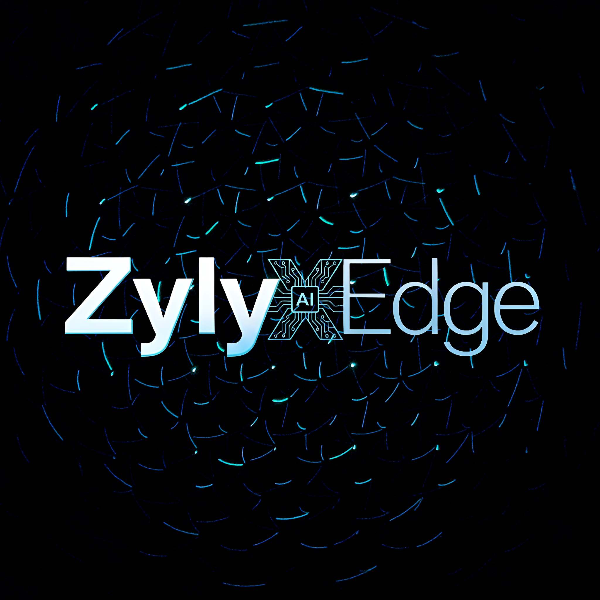
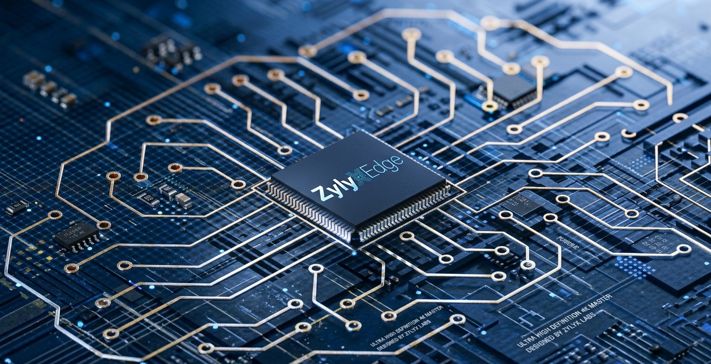
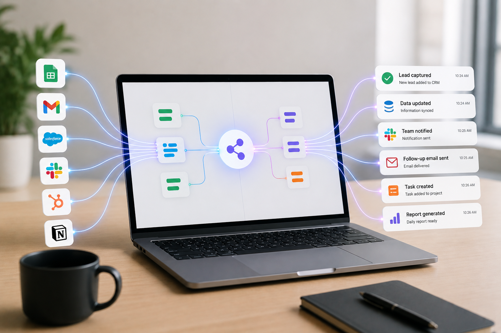
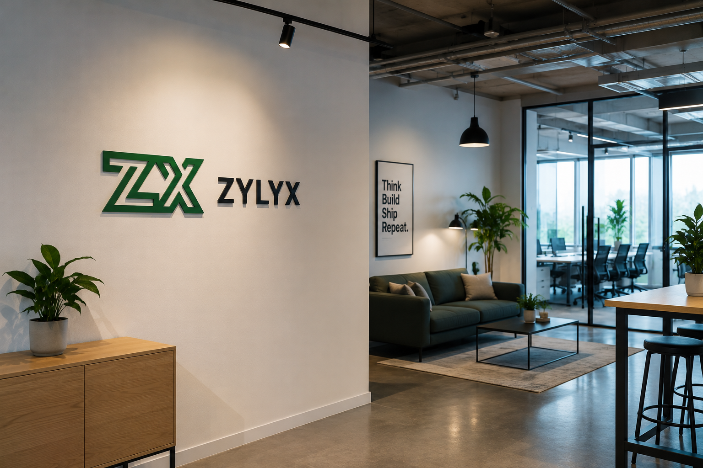

Intelligente
Digitale
Infrastruktur
Aufbauen
KI‑Systeme, Automatisierungsplattformen, moderne Schnittstellen und leistungsstarke Hardware‑Lösungen.
Komplette digitale Infrastruktur
Drei starke Säulen für moderne Unternehmen – von Hardware über Edge-KI bis zur vollständigen digitalen Plattform.
LaptopNu
Hochleistungs‑Laptop‑Leasing, Verkauf und spezialisierte Hardware‑Lösungen.
Mehr entdeckenZylyxEdge
Private und sichere Edge‑KI‑Datenverarbeitung in Echtzeit.
Mehr entdeckenZylyxStudio
WebDesign & AgenticFlow – moderne Websites und KI-Automatisierung aus einer Hand.
Mehr entdeckenPrivacy‑First, KI‑nativ, unternehmensbereit
Im Gegensatz zu Freelancern oder generischen Agenturen liefern wir komplette End-to-End-Systeme – Hardware, KI, Web und Automatisierung – alles mit deutschen Datenschutzstandards und skalierbarer Architektur.
Über uns erfahrenDatenschutz an erster Stelle
Deutsche Datenschutzstandards mit GDPR-Compliance.
End-to-End Systeme
Hardware + KI + Web + Automatisierung aus einer Hand.
Schnelle Umsetzung
Rapid Execution ohne Kompromisse bei Qualität.
AI Native
KI ist der Kern von allem, was wir bauen.
Von der Vision zur skalierenden Infrastruktur
Ein strukturierter, transparenter Prozess, der Ihre digitale Transformation beschleunigt.
Analyse
Wir analysieren Ihre bestehende Infrastruktur, identifizieren Engpässe und definieren klare Ziele für Ihre digitale Transformation.
Architektur
Wir entwerfen eine maßgeschneiderte Systemarchitektur – sicher, skalierbar und zukunftssicher – abgestimmt auf Ihre Anforderungen.
Entwicklung
Unser Team setzt die Lösung mit modernsten Technologien um – agil, transparent und mit regelmäßigen Feedback-Schleifen.
Bereitstellung
Nahtlose Integration in Ihre bestehende Umgebung mit umfassenden Tests und einer stabilen, gesicherten Live-Schaltung.
Optimierung
Kontinuierliches Monitoring, Performance-Tuning und proaktive Weiterentwicklung für langfristigen Erfolg.
Bereit, intelligentere digitale Systeme aufzubauen?
Vereinbaren Sie ein Strategiegespräch und lassen Sie uns Ihre Infrastruktur transformieren.
Strategiegespräch vereinbarenLaptopNu
Hochleistungs‑Laptop‑Leasing, Verkauf und spezialisierte Hardware‑Lösungen für Profis und wachsende Unternehmen.
LaptopNu
Leistung trifft Flexibilität. LaptopNu bietet erstklassiges Laptop‑Leasing, Verkauf und maßgeschneiderte Hardware‑Lösungen. Hochwertige generalüberholte Laptops für Unternehmen, Entwickler, Studenten und Profis – mit zuverlässiger Leistung zu fairen Preisen.
Jedes Gerät durchläuft strenge 72‑Stunden‑Tests und wird mit Ihrem Betriebssystem, Entwicklungstools und Sicherheitsrichtlinien vorkonfiguriert – sofort einsatzbereit.
Warum LaptopNu: Flexible Leasing‑Laufzeiten, 3‑Monate‑Garantie, Kundenorientierter Support, keine versteckten Kosten. Premium generalüberholte Laptops zu wettbewerbsfähigen Preisen.
Nachhaltig & flexibel
Wir setzen auf zertifiziert generalüberholte Geräte, die höchsten Umweltstandards entsprechen. Jedes Modell ist ein erfolgreiches, vielfach bewährtes Business‑Notebook – kein Experiment, sondern ein verlässlicher Partner. Dank flexibler Leasing‑Modelle passen wir uns Ihrem Rhythmus an, ob für ein Projekt oder langfristig.
- Zertifiziert nachhaltig & CO₂‑sparend
- Nur bewährte Top‑Modelle im Portfolio
- Flexibles Leasing – monatlich kündbar

Warum LaptopNu?
ZylyxEdge
Private und sichere Edge‑KI‑Datenverarbeitung in Echtzeit – für Unternehmen mit höchsten Datenschutzanforderungen.

ZylyxEdge
Privat. Sicher. Intelligent. ZylyxEdge ist unsere Flaggschiff‑Edge‑KI‑Plattform für Echtzeit‑Datenverarbeitung unter strengen Datenschutzauflagen. Sie verbindet sich mit IoT-Sensoren und Edge-Geräten wie Kameras, Umweltsensoren und Industriemonitoren, um Daten lokal zu verarbeiten und sofortige Erkenntnisse zu liefern.
Auf Basis einer Zero‑Trust‑Architektur ist jeder Knoten verschlüsselt und gehärtet. Setzen Sie vorausschauende Wartung, Videoanalysen oder Patientenüberwachung ein – mit geringerer Abhängigkeit von Cloud-Verarbeitung für verbesserte Geschwindigkeit, Datenschutz und Systemeffizienz.
Warum ZylyxEdge: Benutzerdefinierte KI‑Beschleuniger, intuitive Konsole, modulare Skalierung, herstellerneutral. Edge-basierte Echtzeit-Datenverarbeitung mit geringer Latenz direkt an der Quelle.
Zukunftssicher & skalierbar
ZylyxEdge wächst mit Ihren Anforderungen. Dank modularer Architektur erweitern Sie Rechenleistung und Speicher nahtlos – ohne Downtime. KI‑Modelle werden direkt auf dem Edge‑Device ausgeführt, was maximale Privatsphäre und minimale Latenz garantiert. Die Plattform unterstützt modernste KI‑Frameworks und lässt sich nahtlos in bestehende Cloud‑ und On‑Premise‑Infrastrukturen integrieren. Mit kontinuierlichen Updates bleibt Ihr System stets auf dem neuesten Stand der Technik – bereit für die Herausforderungen von morgen.
- Modulare Edge‑Knoten – beliebig skalierbar
- Zero‑Trust‑Architektur – maximale Sicherheit
- Performance‑Dashboards & Predictive Analytics

Warum ZylyxEdge?
ZylyxStudio
WebDesign & AgenticFlow – zwei starke Zweige, eine Plattform für Ihre digitale Präsenz und Prozessautomatisierung.
WebDesign
ZylyxStudio WebDesign erstellt moderne, hochperformante Websites und Webanwendungen, die auf Conversion und Benutzerfreundlichkeit ausgelegt sind.
Verwandeln Sie Ihre Online‑Präsenz mit einer modernen Website, die exakt auf Ihre Anforderungen zugeschnitten ist. Wir gestalten pixelgenaue UI/UX, entwickeln responsive, schnelle und SEO‑optimierte Seiten und integrieren komplexe Geschäftslogik direkt in Ihre Website. Ob hochkonvertierende Landingpage, funktionsreiche Webanwendung oder mehrsprachiger Auftritt – ZylyxStudio WebDesign liefert ein digitales Erlebnis, das für Sie und Ihre Kunden funktioniert.
Wie WebDesign funktioniert
Design
Pixelgenaues UI, Markenorientierung, unbegrenzte Revisionen
Entwickeln
Responsive Webseiten, moderne Frameworks, API-Integrationen
Launch
SEO-optimiert, schnell und weltweit zuverlässig erreichbar
Was Sie bekommen
Maßgeschneidertes UI/UX-Design
Mobile-First Responsive
SEO & Analytics
Geschäftslogik
Personalized support
Performance-Optimiert
SSL & Sicherheit
CMS-Integration
Mehrsprachig
AgenticFlow
AgenticFlow automatisiert Workflows, verbindet Tools und eliminiert manuelle Aufgaben.

Sparen Sie Stunden manueller Arbeit. AgenticFlow verbindet Ihr CRM, E‑Mail und über 200 weitere Tools, um sich wiederholende Aufgaben, Dateneingaben und plattformübergreifende Benachrichtigungen zu automatisieren. Haben Sie eine wichtige E‑Mail verpasst? Unsere Workflows senden sofortige Warnungen und lösen automatisch Follow‑ups aus. Von Genehmigungsketten bis zu Monatsberichten läuft jeder Prozess 24/7 im Hintergrund – damit Sie über das Wesentliche informiert werden, nie Fristen verpassen und jede Woche produktive Stunden zurückgewinnen.
Wie AgenticFlow funktioniert
Entdecken
Workflows analysieren & Engpässe finden
Verbinden
CRM, E-Mail & 200+ Tools integrieren
Erstellen
Trigger & smarte Aktionen designen
Automatisieren
Läuft 24/7, null Klicks, maximale Ergebnisse
Was Sie bekommen
Maßgeschneiderte Workflows
200+ Integrationen
Echtzeit-Überwachung
Monatsberichte
Dedizierter Spezialist
Enterprise-Sicherheit
Versionsverlauf
Team-Zusammenarbeit
Performance-Dashboards
Wer wir sind
Unsere Geschichte, Vision und Engagement.
Was wir tun
Zylyx entwickelt intelligente Plattformen für Unternehmen. Wir konzentrieren uns auf KI‑Infrastruktur, Workflow‑Automatisierung und Hardware‑Ökosysteme. Unser Ziel ist es, Unternehmen zu helfen, schneller und effizienter zu arbeiten.
Unsere Vision
Wir schaffen innovative Lösungen, die intelligente Technologie mit echten Ergebnissen verbinden. Es geht darum, Menschen zu befähigen und neue Möglichkeiten für die Zukunft zu schaffen.
Skalierbar von Natur aus
Durch die Kombination von fortschrittlicher Technik und modernem Design entwickeln wir digitale Erlebnisse, die mit Ihrem Unternehmen wachsen können.
Innovation im Kern
Kontinuierliche Forschung, Open‑Source‑Beiträge und eine Kultur der Neugier halten uns an der Spitze der intelligenten Infrastruktur.

Zylyx UG
Werden Sie Teil des Zylyx‑Teams
Gestalten Sie mit uns die Zukunft.
Keine offenen Stellen
Wir wachsen ständig. Schauen Sie bald wieder vorbei.
Nicht die richtige Rolle dabei?
Wir suchen immer nach außergewöhnlichen Talenten.
Initiativbewerbung sendenKontaktieren Sie uns
Wir freuen uns auf Ihre Nachricht.